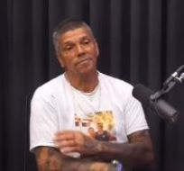

Brazilian Serial Killer
Alias: Killer Petey, Pedrinho Matador
Born: Santa Rita do Sapucaí, Brazil
Victims: 71 confirmed, 100+ confessed
Status: Released in 2018
Pedro Rodrigues Filho was born on 17th July 1954, Santa Rita do Sapucaí, Brazil with a brain injury after his father abused his mother while she was pregnant with him. Many believe that this alongside the murder of his mother by his father, and the murder of his lover by gang members fuelled Filho’s mission of killing criminals. Filho killed his first 10 people just before the age of 18 (Interesting, 2020), with his list continuously growing throughout his years. Whilst Filho was a serial killer, some articles and news outlets deemed him as one of the “nicer” serial killers, some even comparing him to the real-life version of Dexter (Interesting, 2020). From then, Filho began his full-time criminal career, killing cartel and other gang members. In 1973 he was finally arrested after several murders. Whilst his total number of confirmed killings is 71, 47 of those took place while he was incarcerated. Despite Filho’s track record of murders within the prison and his sentence of 126 years, he was released in 2007. Filho was arrested once again in 2011 and was released again in 2018. Filho described the process of his murders that took time in prison, stating that his targets were often those he felt “deserved retribution” (Interesting, 2020). In a recent podcast, Filho states that he would not kill again unless his life or his family’s life was in immediate danger (McGee, 2021).